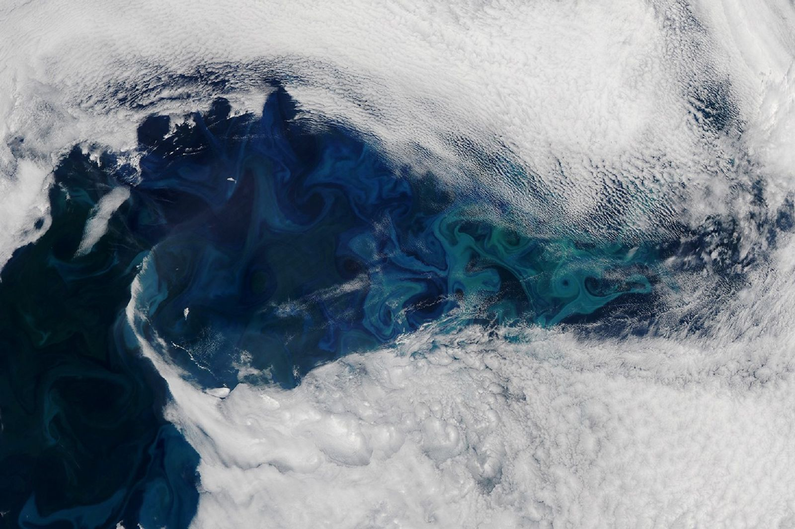
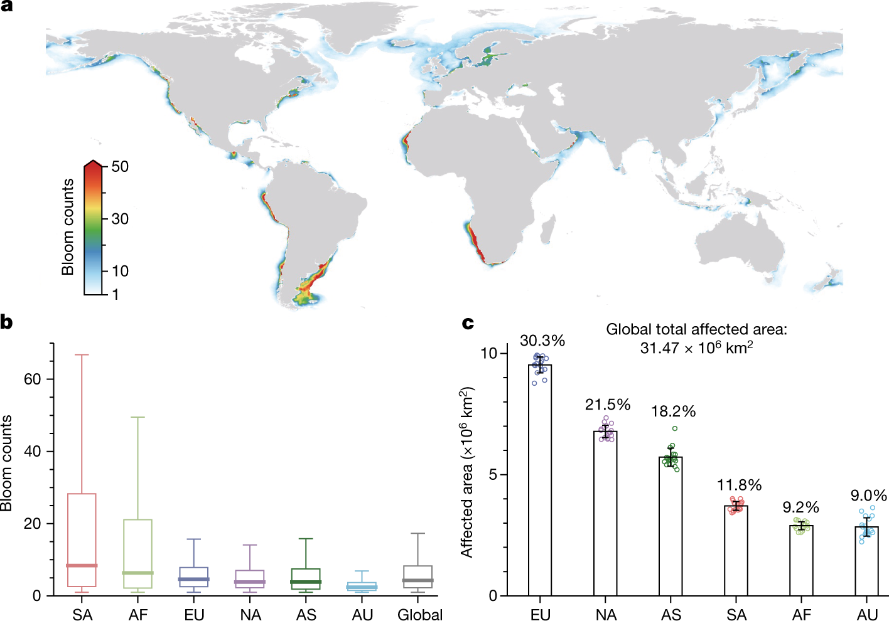
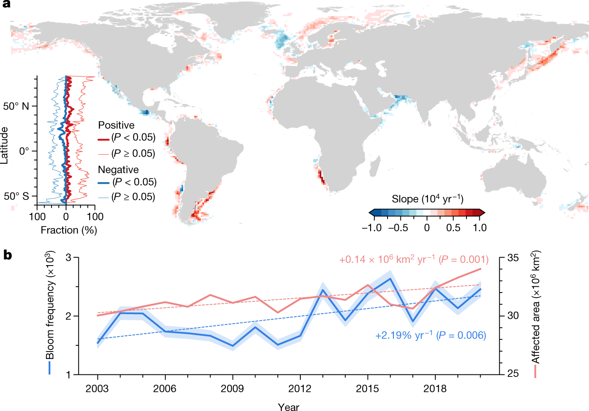
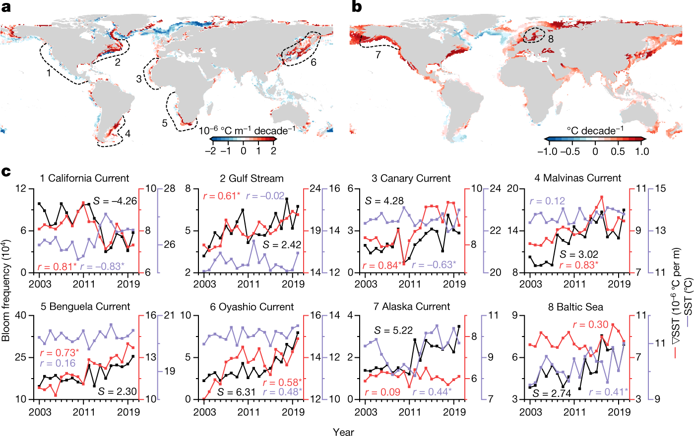

藻类水华
生态作用、发生机制与防控措施
摘要藻类是水生态系统的重要初级生产者，其大量增长和聚集可形成水华。水华的发生与营养供应、光照、温度及水体运动等因素有关，部分水华会引发缺氧、毒素暴露和水资源利用问题。本文从基本概念出发，介绍藻类的生态作用、水华的形成过程与主要影响，并概述综合防控思路与海洋遥感前沿研究。
关键词藻类水华；富营养化；水动力；生态影响；综合防控
一、引言
湖泊、水库和近海出现的水色变化，常与藻类的生长和分布有关。当特定类群在适宜条件下大量积累时，便可能形成水华。水华既是水生态过程的一种表现，也是水质保护、渔业生产与海洋环境研究关注的重要现象。
认识水华，需要同时理解藻类的正常生态功能和过量积累可能带来的影响。对于描述性物理海洋课程而言，水流、混合和分层如何改变藻类获得的光照、营养以及停留时间，是联系物理环境与生物响应的重要切入点。[3]

二、藻类简介
2.1 基本概念与生活方式
藻类是一个广义的生物学称谓，包含许多能够进行光合作用的生物类群，并非单一的分类单元。它们既有显微镜下才能观察到的单细胞种类，也有肉眼可见的大型海藻，广泛分布于淡水和海洋环境。
水体中随水流漂浮的微小藻类，是浮游植物的重要组成部分；另一些藻类附着在底部、岩石或其他生物表面。不同类群在形态、生理特征和环境适应性上存在差异，因此并非所有藻类都会在同样的条件下形成水华。
2.2 主要类群及其特征
与水华相关的常见类群包括蓝细菌、绿藻、硅藻和甲藻等。通常所说的“蓝藻”实际属于蓝细菌，不属于真核藻类；在水华研究与管理中，二者常被共同讨论。[2]
表 1 常见藻类及蓝细菌类群概览
| 类群 | 基本特征与例子 | 与水华的关系 |
|---|---|---|
| 蓝细菌 | 能进行光合作用的细菌，俗称蓝藻，如微囊藻。 | 部分种类可形成淡水水华，其中一些种类或株系能够产毒。 |
| 绿藻 | 包括微小藻类和大型藻类，如小球藻、水绵、浒苔。 | 部分种类可大量增殖；大型绿藻大量生长和聚集可形成绿潮。 |
| 硅藻 | 细胞壁含硅质结构，是常见的浮游植物类群。 | 参与许多自然藻华；部分种类能够产生毒素。 |
| 甲藻 | 许多种类具有鞭毛，如亚历山大藻属的部分种类。 | 是海洋有害藻华的重要类群之一，但并非所有甲藻都有害。 |
| 红藻 | 多见于海洋，如紫菜，部分种类为大型海藻。 | 是认识藻类多样性的重要类群；“红藻”与“赤潮”不是同一概念。 |
分类说明：螺旋藻属于蓝细菌，不能列为绿藻的例子。上表用于概念介绍，并非完整的藻类分类体系。
三、水华简介
3.1 水华的定义与表现
水华的颜色可能呈绿色、褐色或红色等，取决于优势种类、色素和水体条件。有害藻华强调的是对生态系统或人类活动造成的危害，不能单凭水色判断。海洋中常用的“赤潮”一词也不意味着水一定呈红色。[5]
3.2 水华形成的主要条件
- 营养物质供应：氮、磷等是藻类生长所需的资源。农业径流、城市排水等输入过多，会增加部分水域发生水华的风险。
- 光照条件：光合作用需要光，但藻类实际获得的光照还受到透明度、水深和垂向混合的影响。
- 温度条件：适宜温度有利于生长，但不同种类的适温范围不同，不能简单认为温度越高，水华就越严重。
- 水动力条件：水流影响藻类的输送和停留时间；分层与混合影响细胞在水柱中的位置，以及光和营养物质的供应。
这些因素相互作用，共同影响水华的形成与维持。富营养化能够增加风险，但并不是所有水华都由单一的营养输入过程造成。[3][5]
四、藻类在水生态系统的作用
- 4.1 初级生产与食物网支持
- 许多藻类通过光合作用固定无机碳，形成有机物，将太阳能转化为生物可利用的化学能。浮游动物和其他摄食者利用这些有机物，能量随后向鱼类等生物传递。因此，藻类是水域食物网的重要基础。[1]
- 4.2 氧气产生与物质循环
- 藻类的光合作用能够释放氧气，生长过程中也会吸收营养元素。与此同时，藻类自身的呼吸及其死亡后的微生物分解会消耗氧气，并使部分营养物质重新进入环境。水体的氧平衡取决于这些过程及水体交换的共同作用。
- 4.3 生境维持与生态联系
- 大型海藻形成的植被可为其他生物提供附着空间、庇护和食物。微小藻类则通过与细菌、浮游动物等生物的联系，参与水体中的能量传递和物质转化。
- 4.4 水环境变化的指示
- 藻类的种类组成、生物量和空间分布能够反映环境变化。观察这些特征有助于认识水生态状态，但评估水质仍需结合营养盐、溶解氧等指标，不能仅以“藻多”或“藻少”作出判断。
五、藻类水华的发生及影响
5.1 水华的发生与演变
从过程上看，水华的形成与藻类的增长、损失和空间输送有关。当细胞生长及外部输入持续超过摄食、死亡和输出等损失时，局部生物量就可能积累。已有藻类也可能因水流汇聚或上浮而集中，使水面在较短时间内出现明显变化。
水华发生与消退的主要过程
- 条件适宜光、营养与温度等条件支持藻类生长。
- 生物量积累增长和输入持续超过损失，藻量增加。
- 输送与聚集水体运动等过程改变藻类的空间分布。
- 衰退与分解营养限制、摄食和死亡等促进水华消退。
因此，岸边藻类浓度突然升高，不一定意味着整个水域的藻类都在同步增加。研究和监测中，需要区分生物增长与物理聚集，并注意水华在衰退后仍可能产生影响。
5.2 对水生态系统的影响
- 光环境改变。高浓度藻类削弱进入水下的光照，影响沉水植物和其他光合生物。
- 低氧或缺氧。大量藻体死亡后，微生物分解有机物会消耗氧气；夜间光合作用停止时，呼吸耗氧也可能使缺氧风险增加。
- 生物群落变化。毒性作用、氧条件和栖息环境的变化，可能影响鱼贝类及其他生物，改变食物网关系。
并非所有水华都有害，也并非所有有害水华都产毒。即使不产毒，过量生物量造成的遮光、缺氧等过程仍可能导致生态损害。[1]
5.3 对社会经济及人类健康的影响
水华可能增加供水处理难度，影响渔业养殖、旅游和水上休闲活动。部分种类产生的毒素还可通过受影响的水体或水产品造成暴露。具体风险取决于种类、毒素浓度和暴露途径，需要相应检测与监测支持。[2][5]
六、藻类水华的防控措施
6.1 源头控制与营养负荷削减
防控应首先关注进入水体的营养物质来源。通过改善污水处理、优化农业施肥与排水管理、减少养殖和生活污染输入等措施，降低流域氮、磷负荷。具体方案需要结合当地污染来源及水体特征制定。[4]
6.2 生态保护与修复
在适宜区域保护和恢复湿地、岸带植被及水生生态系统，有助于拦截部分营养输入并改善生境。生态修复需要考虑水深、光照、底质及原有生物群落，治理效果应通过持续观测评估。
6.3 监测、预警与效果评估
将藻类种类和数量观测，与水温、营养盐、透明度、溶解氧及水流条件结合，可更完整地认识水华变化。对可能产毒的事件，还需开展针对性的毒素检测。监测既服务于早期识别，也用于判断治理后的水质是否改善。
6.4 应急处置与综合管理
水华发生后，应结合供水、养殖和公众活动等实际需求开展响应。物理、生物或化学控制手段各有适用条件和局限，需根据水域情况评估；短期降低藻量不能替代长期源头管理。对于可能产毒的蓝细菌水华，细胞破裂还可能使毒素释放到水中。[4][2]
防控工作需要流域管理、水环境监测、供水和渔业等环节协同，并通过信息公开与公众参与保持长期治理的连续性。
七、藻类水华的前沿研究
海洋遥感让我们能够从太空持续观察水华。Dai 等于 2023 年发表在 Nature 的论文 Coastal phytoplankton blooms expand and intensify in the 21st century，研究了一个问题：全球近岸浮游植物水华，是否正在变得更广、更频繁？标题提到“21 世纪”，实际分析时段是 2003—2020 年。

先看 a 面板：颜色表示年平均水华检出次数，暖色通常对应更高的数值。再看 b、c 面板，分别比较不同大洲的检出次数和受影响面积。这里展示的是多年统计格局，不是某一天全球海面同时发生水华的照片。
Dai, Y. et al., Nature 615, 280–284 (2023), Fig. 1 · CC BY 4.0。原图未改动，仅等比例显示；中文读图说明为本页补充。
7.1 卫星怎样识别水华
研究使用 Aqua 卫星搭载的 MODIS 传感器，分析约 76 万景影像，在 1 千米空间分辨率下绘制逐日水华分布。近岸泥沙和有色溶解有机物会干扰常规叶绿素反演，因此作者利用约 678 纳米处的叶绿素荧光信号，并结合邻近波段，在 CIE 色度空间中区分水华与非水华像元。可以把它理解为：寻找藻类的“光谱线索”，而不是只看海水是否变绿。
- 卫星观测收集多年 MODIS 影像，剔除云、耀斑等低质量像元
- 荧光识别利用波段组合与分类边界识别水华
- 逐日制图记录水华出现的位置及受影响面积
- 分析变化统计长期趋势，联系水温和海洋动力过程
7.2 主要发现
- 分布广：研究考察的 153 个沿海国家中，126 个国家的近岸海域检测到了水华。
- 范围扩大：2003—2020 年，全球水华影响面积增加约 13.2%。
- 出现更频繁：全球水华频率指标的中位数提高约 59.2%；但区域差异明显，北半球部分热带、亚热带海域呈减弱趋势。

a 面板中，红色表示水华频率呈上升趋势，蓝色表示下降。b 面板的蓝线对应左轴（水华频率），红线对应右轴（受影响面积）；两条曲线整体上升，但都有年际波动。注意：两条纵轴的单位不同，不能直接比较曲线的高低。
Dai, Y. et al., Nature 615, 280–284 (2023), Fig. 2 · CC BY 4.0。原图未改动，仅等比例显示；中文读图说明为本页补充。
作者将这些变化与海表温度、海流及营养盐输送联系起来：适宜的增温可能促进生长，海流和上升流变化则会改变营养盐供给。不同海域的主导因素不同，不能简单理解为“海水越暖，水华一定越多”。
指标说明：文中的“频率”综合了 \(1^{\circ} \times 1^{\circ}\) 网格内的水华检出次数与受影响面积。59.2% 是该指标的相对变化，不代表藻类浓度、毒性或有毒水华比例增加了 59.2%。

a、b 面板分别展示海表温度梯度和海表温度的变化趋势。c 面板比较八个海区：黑线是水华频率，红线是海温梯度，紫线是海温。海温梯度表示温度在空间上变化的快慢，并非升温速度。不同海区的关系不同；相关性本身不能单独证明因果关系。
Dai, Y. et al., Nature 615, 280–284 (2023), Fig. 3 · CC BY 4.0。原图未改动，仅等比例显示；中文读图说明为本页补充。
7.3 对海洋遥感研究的启发
这项工作的价值，是把局地的一次水华扩展为可比较的全球长期记录。作为海洋遥感方向的学习延伸，可以选择一个近岸海域，把水华遥感记录与海温、风场、海流及现场观测结合，研究水华何时出现、在哪里聚集，以及环境变化如何影响它。这是基于论文提出的研究思路，并非论文已经证明的局地结论。
解读边界：这项方法识别的是具有可探测荧光信号的表层浮游植物水华，不能直接判断藻种或毒性，也可能漏掉水下、低生物量及云遮挡的事件。遥感适合追踪大范围变化，具体生态风险仍需现场采样验证。
论文解读依据：Dai, Y. et al. (2023), Nature 615, 280–284。阅读论文 · 作者公开的数据与代码。本节为简化概述；原文采用 CC BY 4.0 许可。
八、总结
藻类既是水生态系统的基础生产者，也可能在特定条件下大量积累并形成水华。认识水华，应把生物过程与环境条件联系起来，理解营养、光照、温度和水动力如何共同影响其发生、维持与消退。
评价水华影响，需要区分正常生态功能、过量生物量效应和毒性风险。防控则应贯穿源头削减、生态保护、持续监测和应急管理，依据观测结果选择适合具体水域的措施。
核心认识：水华是生物过程与物理、化学环境共同作用的结果。有效管理的目标，是降低有害事件的风险、维护水生态功能，而不是消除水体中的所有藻类。